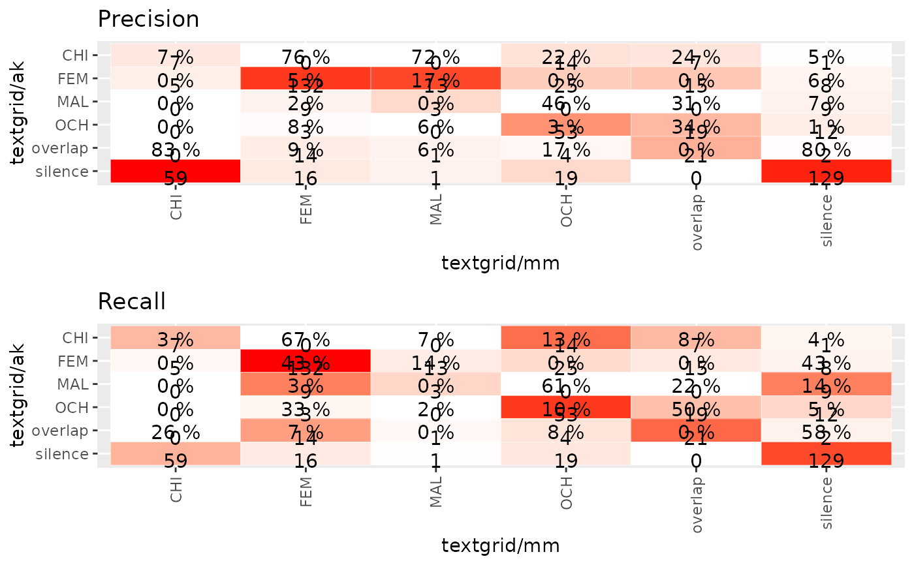

Provide a SDT indicator to compare two rater and graph
get.classification(raterData, raters, plot = TRUE, summary = TRUE)
| raterData | : a raterData class |
|---|---|
| raters | : a vector containing two string with the names of the two raters |
a Class, print a graph and return a list containing a confusion matrix class from caret package and a macro SDT indicator
library(ChildRecordsR) path = "/mnt/94707AA4707A8CAC/CNRS/corpus/namibia-data/" CR = ChildRecordings(path)#> ############################################### #> Hello Wellcome to the ChildRecordings R Project #> #> Your ChildRecording project path contained : #> 3619 annotations files #> 1559 are referenced in the metadata #> 7 coders were found : textgrid/m1 alice_vtc vtc alice textgrid/ak textgrid/mm textgrid/ac #> #> 42 file(s) seem(s) to be unreferenced in the metadata #> more infos in ChildRecordings$integrity_test$files.unreferenced #> #> 427 metadata don't have a start recording time (a.k.a start.time) #> therefore time indicators will not be built for those files #> more infos in ChildRecordings$integrity_test$missing.start.time #> 362 files are empty #> This should normally mean that no annotation were provided by annotator #> more infos in ChildRecordings$integrity_test$empty.files# finding segments on wav file for designated rater raters <- c("textgrid/ak","textgrid/mm","textgrid/m1") search <- find.rating.segment(CR,"aiku/namibie_aiku_20160715_1.wav",range_from = 27180000, range_to = 27240000) ratting1 = aggregate.rating(search, CR, 100)#> |============ | 17% time by step : 0s estimate duration : 0m remain : 0m #> |========================= | 33% time by step : 0s estimate duration : 0m remain : 0m #> |===================================== | 50% time by step : 0s estimate duration : 0m remain : 0m #> |================================================= | 67% time by step : 0s estimate duration : 0m remain : 0m #> |============================================================== | 83% time by step : 0s estimate duration : 0m remain : 0m #> |==========================================================================|100% time by step : 0s estimate duration : 0m remain : 0m #> number of annotators 6 #> length of recording annotation for each annotator 60000 ms or 0.01666667 hours #>#> Confusion matrix : #> #> textgrid/mm #> textgrid/ak CHI FEM MAL OCH overlap silence #> CHI 7 0 0 14 7 1 #> FEM 5 132 13 25 15 8 #> MAL 0 9 3 0 0 9 #> OCH 0 3 0 53 19 12 #> overlap 0 14 1 4 21 2 #> silence 59 16 1 19 0 129 #> #> #> STD by class : #> #> Class: CHI Class: FEM Class: MAL Class: OCH #> Sensitivity 0.09859155 0.7586207 0.166666667 0.46086957 #> Specificity 0.95849057 0.8454333 0.969125214 0.93004115 #> Pos Pred Value 0.24137931 0.6666667 0.142857143 0.60919540 #> Neg Pred Value 0.88811189 0.8957816 0.974137931 0.87937743 #> Precision 0.24137931 0.6666667 0.142857143 0.60919540 #> Recall 0.09859155 0.7586207 0.166666667 0.46086957 #> F1 0.14000000 0.7096774 0.153846154 0.52475248 #> Prevalence 0.11813644 0.2895175 0.029950083 0.19134775 #> Detection Rate 0.01164725 0.2196339 0.004991681 0.08818636 #> Detection Prevalence 0.04825291 0.3294509 0.034941764 0.14475874 #> Balanced Accuracy 0.52854106 0.8020270 0.567895941 0.69545536 #> Class: overlap Class: silence #> Sensitivity 0.33870968 0.8012422 #> Specificity 0.96103896 0.7840909 #> Pos Pred Value 0.50000000 0.5758929 #> Neg Pred Value 0.92665474 0.9151194 #> Precision 0.50000000 0.5758929 #> Recall 0.33870968 0.8012422 #> F1 0.40384615 0.6701299 #> Prevalence 0.10316140 0.2678869 #> Detection Rate 0.03494176 0.2146423 #> Detection Prevalence 0.06988353 0.3727121 #> Balanced Accuracy 0.64987432 0.7926666 #> #> #> STD macro indicators : #> #> type unweight weight #> 1 Recall 0.4374501 0.5740433 #> 2 Precision 0.4559986 0.5482289 #> 3 F1 0.4337087 0.5482013